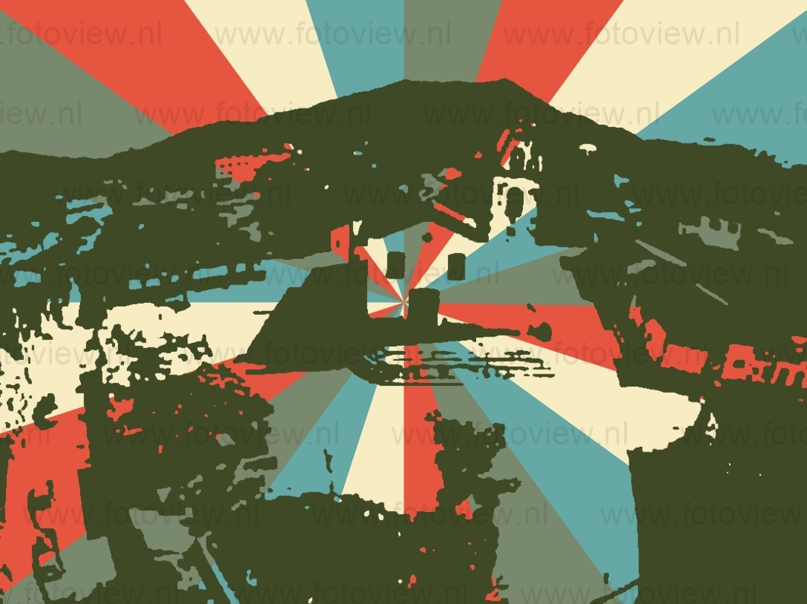
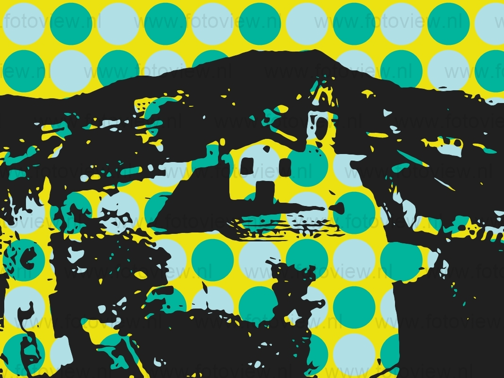

Por volta de 1556, foram notados os primeiros vestígios do homem branco em solo iporanguense, provavelmente de exploradores portugueses ou371832141 refugiados remanescentes dos antigos invasores de nossa terra. Em 1.576, reunidos nos bares e similares da Praça dos Canhões em Cananéia, grupos de intrépidos aventureiros comentavam suas aventuras no desbravamento de novas terras, na conquista de novas fontes de riquezas para a coroa portuguesa. Geralmente fazia parte do grupo, um velho e veterano sertanista que, já não tendo mais forças para encetar novas incursões sertão adentro, deleitava seus ouvintes com narrativas ricas em detalhes, no qual discorria sobre a imponência de uma rica região encrustada nos contrafortes de magestosas montanhas, com uma flora abundante, prometedora e variada; sua fauna com incríveis manadas de animais das mais variadas espécies e principalmente onde o ouro cintilava, como que jorrando livre a abundante no leito de seus rios, enfim, um verdadeiro “Eldorado” e um deleite aos olhos de quem a visse. Essas narrativas, embora fantasiosa, fascinavam os ouvintes e os impressionavam sobremaneira, fazendo com que, em suas mentes sempre repletas desejos de aventura, de ânsia em desvendar o desconhecido, fossem nascendo, ali mesmo na Praça dos Canhões, a ideia de sair em busca dessa tão comentada região.
 